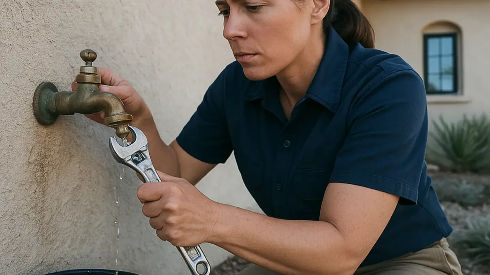

How to Fix a Leaky Faucet in Your Los Angeles Home
Discover effective methods to fix a leaky faucet in your Los Angeles home with our comprehensive guide.

A leaky faucet in your Los Angeles home can waste both water and money. Fixing it is often a straightforward process that you can handle yourself with the right tools and guidance. This article will walk you through the common causes of faucet leaks, the tools you'll need, and a step-by-step guide to repair it.
A leaky faucet is a common plumbing issue that occurs when water drips from the faucet due to worn-out parts or improper installation. Addressing this issue promptly can help prevent further damage to your plumbing system and save you money on your water bill.
Common causes of faucet leaks
Understanding the causes of leaks can help you diagnose and fix the problem more effectively. In Los Angeles, the most common causes of faucet leaks include:
- Worn-out washers: Over time, the rubber washers in your faucet can degrade, leading to leaks.
- Corroded valve seats: The valve seat connects the faucet and the spout. If it becomes corroded, it can cause leaks.
- Loose parts: Sometimes, simply tightening the faucet parts can stop the leak.
- Improper installation: If the faucet was not installed correctly, it could lead to leaks.
- Temperature changes: The fluctuating temperatures in Los Angeles can cause materials to expand and contract, leading to leaks.
Tools and materials needed
Before you start fixing your leaky faucet, gather the following tools and materials:
- Adjustable wrench
- Screwdriver (flathead and Phillips)
- Replacement washers or O-rings
- Plumber's grease
- Bucket or towel to catch water
- Safety goggles
Step-by-step guide to fix a leaky faucet
Follow these steps to repair your leaky faucet:
- Turn off the water supply: Locate the shut-off valves under the sink and turn them off. If you can't find them, turn off the main water supply to your home.
- Drain the faucet: Open the faucet to let any remaining water drain out.
- Remove the faucet handle: Use a screwdriver to remove the screw holding the handle in place. Gently pull the handle off.
- Inspect the parts: Check the washer, O-ring, and valve seat for wear and tear. Replace any damaged parts.
- Reassemble the faucet: Apply plumber's grease to the new washers and O-rings before reassembling the faucet. Make sure everything is tightened properly.
- Turn on the water supply: Slowly turn the water supply back on and check for leaks.
Common mistakes to avoid
While fixing a leaky faucet can be a simple task, there are some common mistakes to watch out for:
- Not turning off the water supply: Always ensure the water supply is off to prevent flooding.
- Using the wrong size parts: Make sure to use the correct size washers and O-rings for your faucet model.
- Over-tightening screws: This can damage the faucet components and lead to more leaks.
- Neglecting to clean parts: Clean any corrosion or debris from the valve seat and other components before reassembly.
When to call a professional
If you have followed the steps above and your faucet is still leaking, it may be time to consult a professional. Issues like corroded pipes or complex plumbing systems may require expertise. Pro Plumbing California offers residential plumbing services in California to help you resolve persistent plumbing issues efficiently.
A basic faucet repair is covered by our Basic Repair Service at $129 flat rate, and most plumbing jobs cost between $180 and $450. Every job starts with a free written estimate, so you know the exact price before work begins.
Yes, most leaky faucets can be fixed by homeowners with basic tools and some guidance.
If the faucet continues to leak after replacing washers and O-rings, the cartridge may need replacement.
Compression faucets are often more prone to leaks due to their design and the wear of rubber washers.
It's a good practice to check your faucets for leaks at least once a year to catch any issues early.